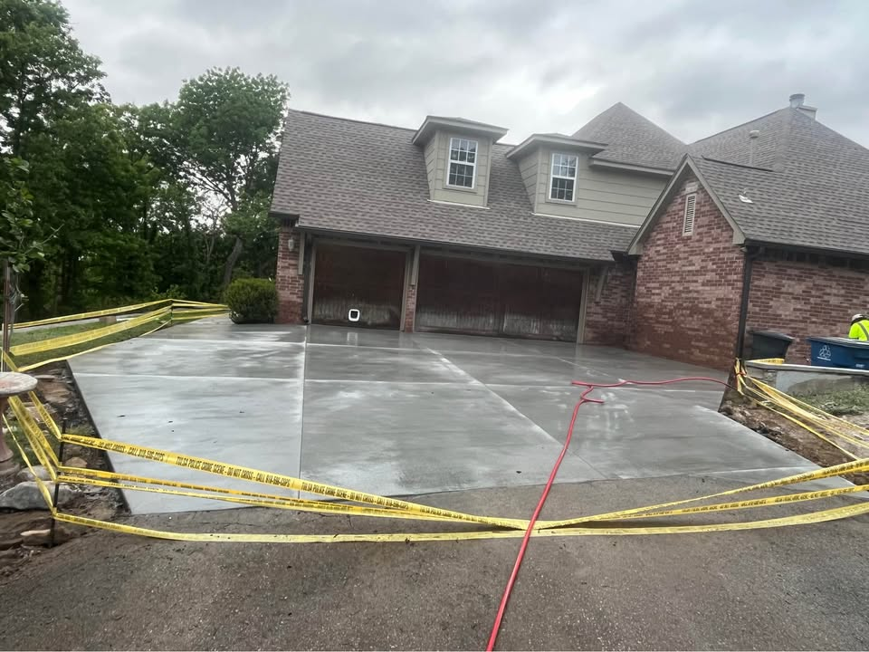

Driveway Replacement
Compare full replacement options for older or failing driveways.
Concrete driveway installation in Enid should account for drainage, vehicle use, slope, base preparation, and long-term cracking risk. Call, text, or request a quote from the homepage.

In Oklahoma, a driveway has to handle summer heat, winter swings, rain runoff, and soil movement. Even a clean-looking driveway can fail early if grading or compaction is ignored. That is why the base and slope matter as much as the surface finish.
Most people looking for a new driveway want a cleaner front approach, better parking use, fewer trip hazards, and less ongoing patchwork. Comparing thickness, drainage planning, and included prep work can make quotes more useful.
Compare full replacement options for older or failing driveways.
Review whether repair or full replacement makes more sense.
Explore outdoor patio options for backyards and seating areas.